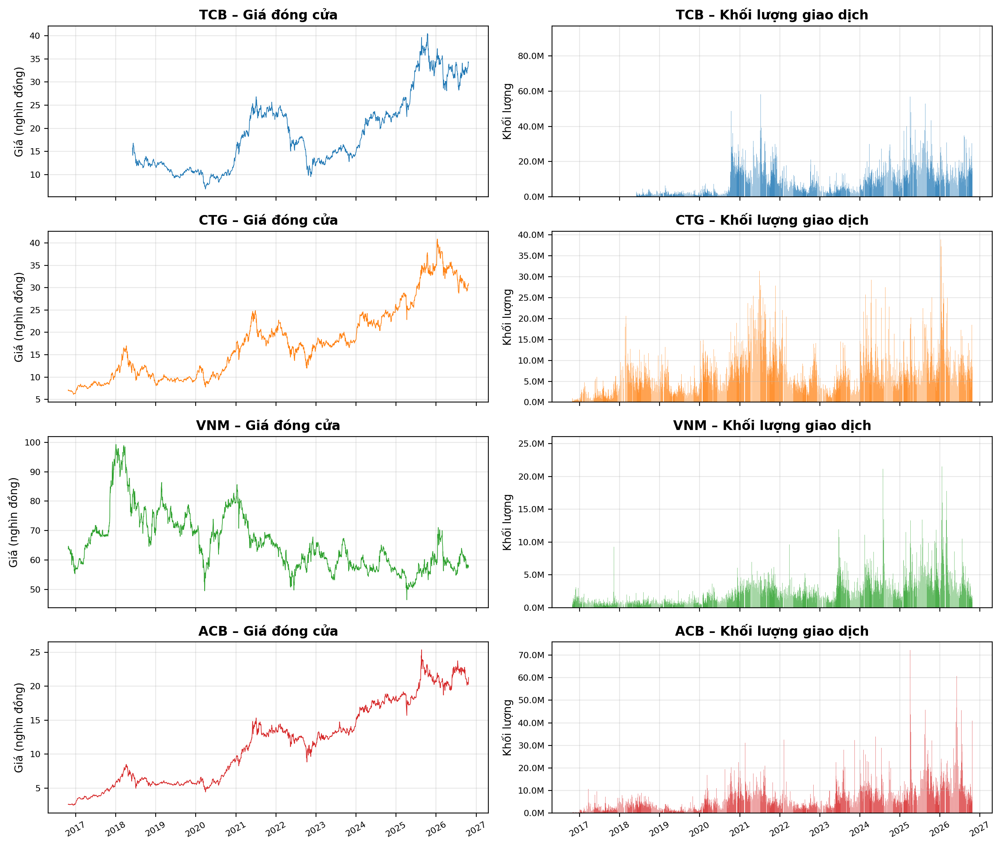
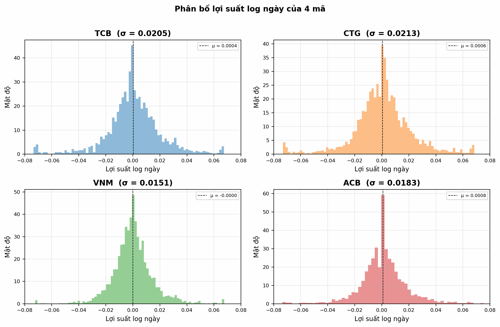
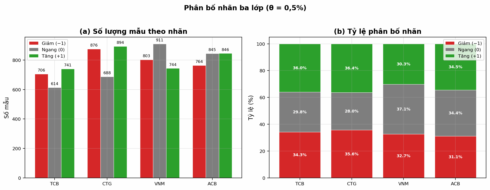
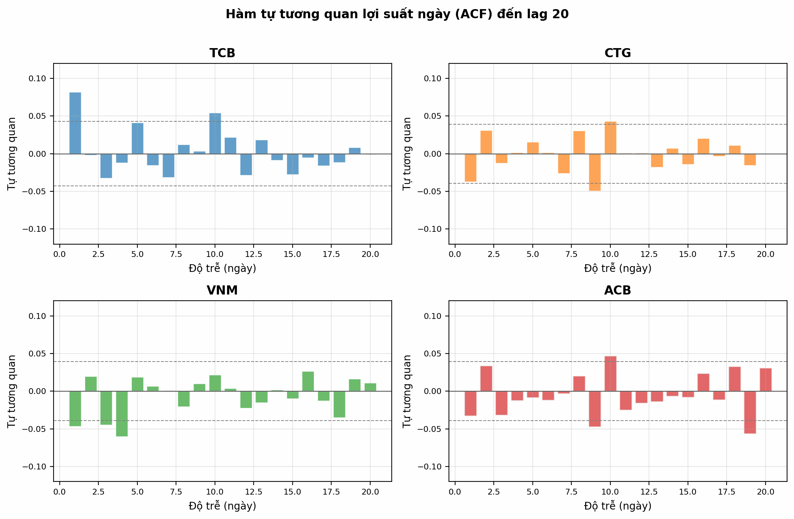
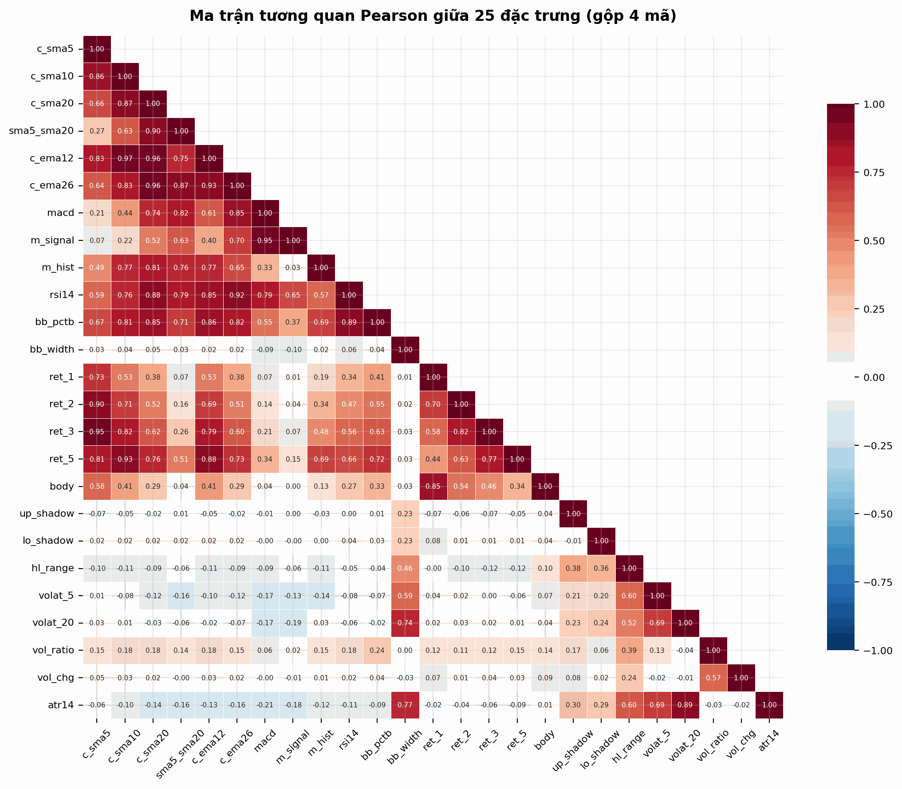
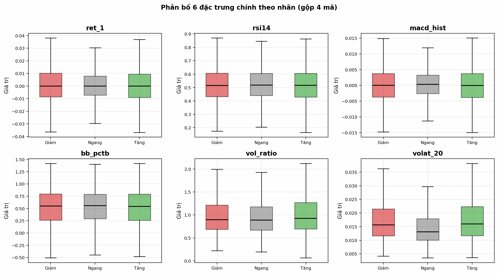
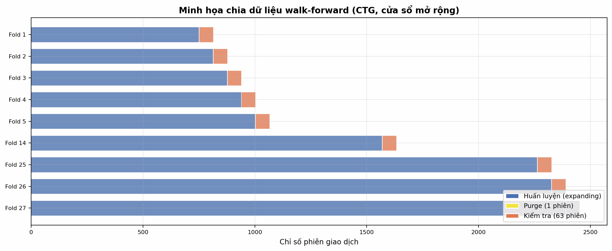

Dữ liệu nến ngày (OHLCV) của bốn mã TCB, CTG, VNM, ACB được thu thập từ API biểu đồ của DNSE (Entrade), cùng nguồn với bảng giá trực tuyến banggia.dnse.com.vn. Toàn bộ lịch sử thu thập từ 8–10 năm (2.098 nến TCB từ 2018; ~2.495 nến cho CTG, VNM, ACB từ 2016) được sử dụng để bảo đảm số lượng mẫu đủ lớn cho kiểm định walk-forward.
| Mã | Số nến thô | Từ ngày | Số mẫu sau xử lý | Số đặc trưng | Số fold Walk-forward |
|---|---|---|---|---|---|
| TCB | 2.098 | 04/06/2018 | 2.061 | 25 | 20 |
| CTG | 2.495 | 26/10/2016 | 2.458 | 25 | 27 |
| VNM | 2.495 | 26/10/2016 | 2.458 | 25 | 27 |
| ACB | 2.492 | 26/10/2016 | 2.455 | 25 | 27 |





close_sma5, close_sma10, close_sma20, close_ema12, close_ema26) tương quan cao (r > 0,80). bb_pctb tương quan 0,95 với close_sma20.volat_5, volat_20, hl_range, bb_width, atr14 tương quan dương mạnh (r ∈ [0,55; 0,85]).vol_ratio và vol_chg có tương quan tuyến tính rất thấp với giá (|r| < 0,15), cung cấp tín hiệu độc lập, trực giao.
ret_1 có sự phân tách trung vị rõ nét nhất giữa lớp tăng và giảm, nhưng khoảng tứ phân vị (IQR) vẫn chồng lấn lớn, cho thấy không thể phân loại bằng ranh giới đơn biến đơn giản.rsi14 và macd_hist dịch chuyển nhẹ sang vùng cao hơn ở lớp tăng và thấp hơn ở lớp giảm.Toàn bộ các lỗi đã kiểm toán thực tế và xử lý:

r_next.StandardScaler chỉ fit trên tập train của từng fold, không rò rỉ sang tập test.Môi trường Python 3.11, NumPy 2.0.2, Pandas 2.3.3, Scikit-learn, XGBoost. Cố định random_state = 42 xuyên suốt mọi thực nghiệm.